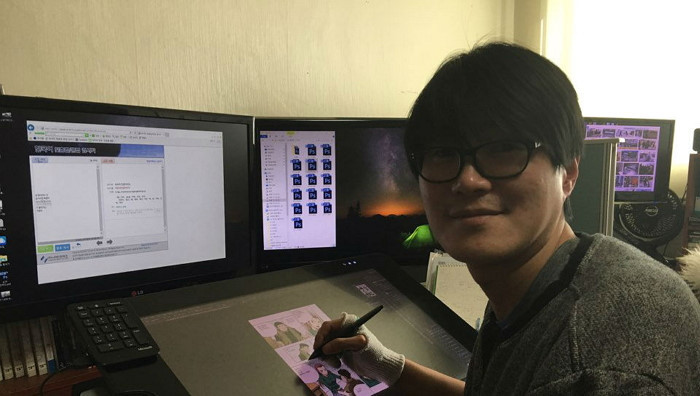

1996년에 『키드갱』이라는 전설적인 작품을 시작으로 지금까지 네이버 웹툰 작가로 활동하고 있는 작가. 2000년 대에 더이상 사람들이 만화책을 찾지 않고, 출판사 문제도 발생해 결국 키드갱 연재 도중 만화를 그만 두었다. 그러나 전설은 숨어있어도 누군가는 알아보는 법. 결국 네이버가 신영우 작가를 모셔와서 네이버 웹툰에서 키드갱을 완결 내고, 그 이후에도 많은 작품들이 독자들에게 많은 웃음과 재미를 선사하고 있다. 이때는 주로 작가들이 주인공 성장물을 그렸다면, 신영우 작가만큼은 신기하게도 다른 작품과는 다르게 처음부터 주인공이 강한 먼치킨물을 만들어 내서 상당히 독자들에게 신선함을 줬다.

신영우
만화가/웹툰작가
신영우 작가의 작품들
웃음? 재미? 감동? => 한 번에!
{kind=link}
{kind=link}
{kind=link}
{kind=link}
대표 작품 소개
.
키드갱
동네 중학생들에게도 돈을 뜯기고 다녀서 고등학교 불량배들조차 엮이기 꺼려한다는 그 이름도 무서운 "피의 화요일"
그 조직의 두목 강대봉은 김형사에게 자신의 조직원이 잡혀 들어가서, 복수를 하기 위해 김형사가 잠시 집을 비운 빈 집을 찾아간다. 집에서 혼자 자고 있던 아기를 데리고 나와 복수를 하려 하는데.. 그러나 주변에서 도시 공사 문제로 주변 가스관이 터졌고, 김형사의 집도 함께 폭발하면서 몰래 데리고 나온 아기는 한 순간에 고아가 되어 버렸다..!
'형님, 아기는 어쩌실 겁니까?'
'어쩌긴, 키워야지..'
고아인 아이와 조직폭력배 "피의 화요일"이 함께 살아가는 이야기!
서울 협객전
먼 옛날, 무림이 있던 시절. 한 명이서 천 명 이상을 죽일 수 있기에 절대 세상 밖에 공개되어서는 안 되는 비화귀전. 한 젊은 천재이자 희대의 살인자 당무용은 그 비화귀전을 훔쳐 도주한다. 그걸 막기 위해 모든 무협인들이 그를 찾아 나선다. 비화귀전을 모두 읽고 외웠지만 직접 자신이 무공을 실현하기 위해서는 시간이 필요했는데.. 결국 익히기도 전에 한 고수로 인해 무공을 봉인당하고 장풍을 맞고 정신을 잃는다. 눈을 떠보니 201x년.. 서울에 아무것도 모르는 그저 바른 학생 장공. 지나가다가 쓰러진 당무용을 구해준다.
더블 캐스팅
더블캐스팅 설명
도망자
도망자 설명